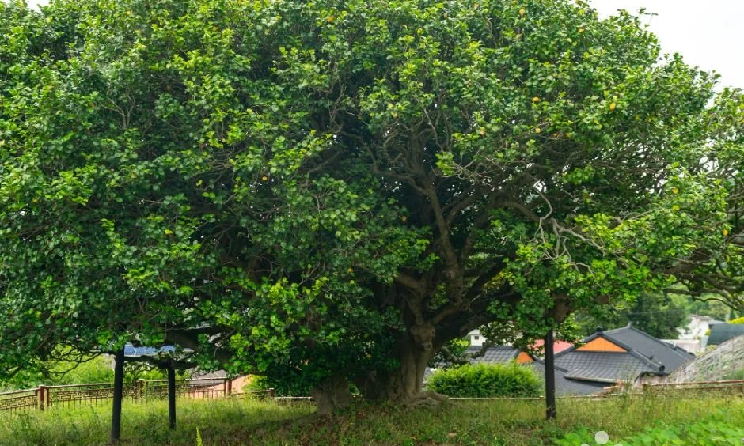
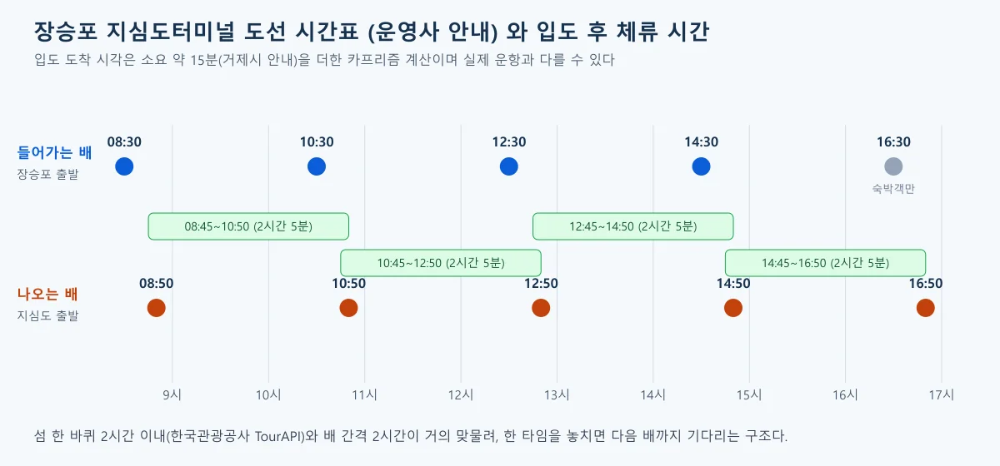
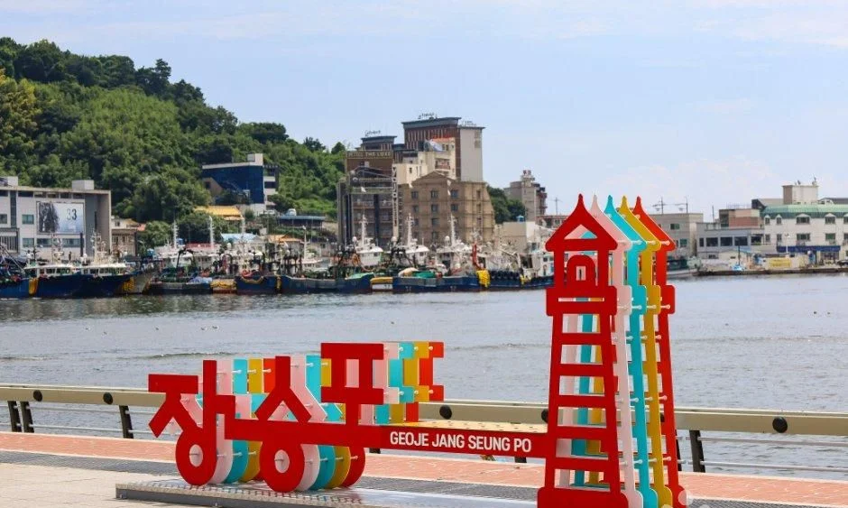
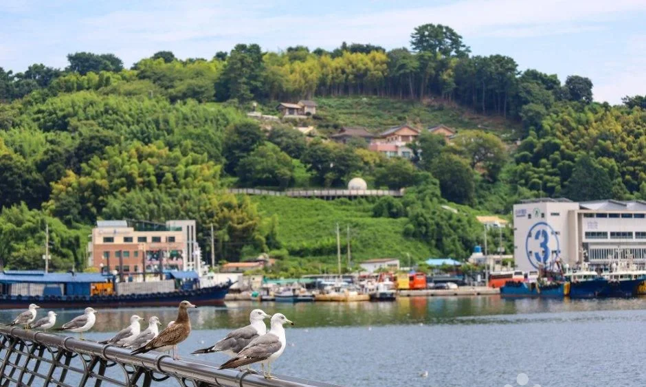
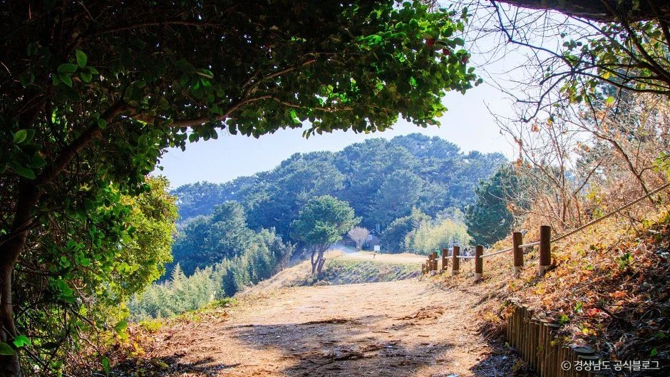
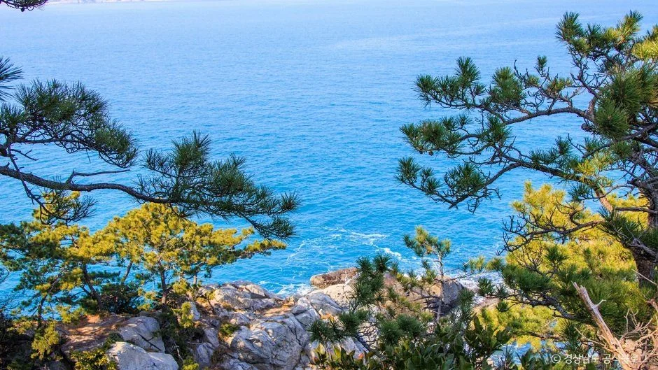
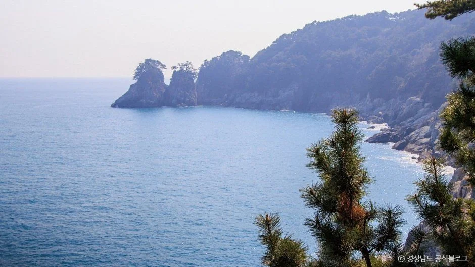
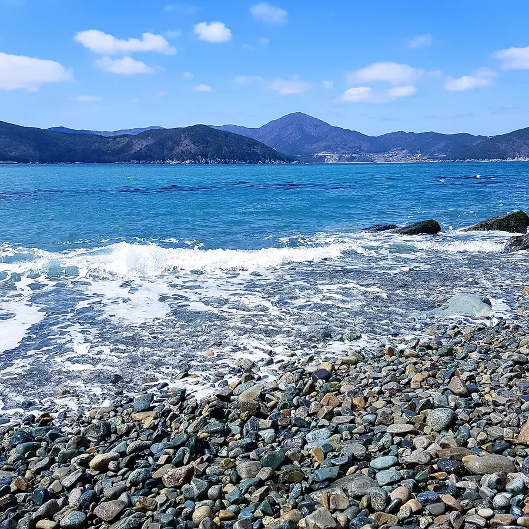
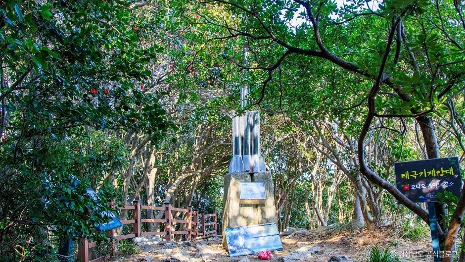
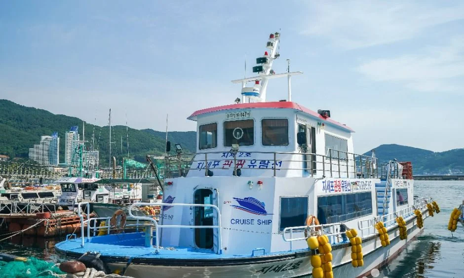

▲ 동백나무 줄기가 늘어선 숲길. 지심도 사진 묶음에 포함된 장면이며 촬영 시기는 자료에 없다 ⓒ 한국관광공사 · 공공누리 제3유형(변경금지) · 원본 하단에 '경상남도 공식블로그' 글자가 들어 있음
"지심도 동백 보러 가려는데 배가 몇 시에 있고, 섬에서 얼마나 있을 수 있죠?" 이 글은 2026년 10월 22일 기준으로 운영사 안내 페이지, 거제시 관광 누리집, 한국관광공사 TourAPI를 대조해 동백 개화 시기와 장승포 배편, 섬 안 코스 시간, 숙박·식당, 겨울 결항 대비를 정리했다. 지심도 운영사 안내 바로가기
배 시간표만 보면 하루 다섯 번이라 넉넉해 보이지만, 섬을 한 바퀴 도는 데 2시간 안팎이 걸리고 배 간격도 2시간이라 한 타임을 놓치면 두 시간을 더 기다리게 된다. 동백 철에는 예약 없이 가면 정원 초과로 못 탈 수 있다는 안내도 있다. 시간표를 입도·귀환 순서로 풀어 계산해 두었다.
💡 먼저 결론
운영사 안내 기준 장승포 지심도터미널에서 08:30·10:30·12:30·14:30·16:30에 들어가고(16:30 배는 숙박객만), 지심도에서 08:50~16:50까지 2시간 간격으로 나온다. 운영사 네이버 예약 화면(2026-10-22 조회)의 왕복승선권은 대인(만 13세 이상) 정가 20,000원·예약가 19,000원, 소인(만 12세 이하, 24개월 이상) 10,000원이다. 거제시 누리집의 옛 후기 글에 보이는 12,000원·6,000원과는 다르다. 동백은 거제시 안내상 12월 초부터 4월 하순까지 피고, 섬 탐방은 2시간 이내로 소개된다. 운영사 예약 안내는 신분증(또는 등본·의료보험증) 지참을 필수로 적고, 미소지 시 승선할 수 없다고 안내한다.
1. 동백은 언제 피나 — 12월 초부터 4월 하순, 절정은 자료마다 다르다
거제시 관광 누리집은 지심도 동백이 12월 초부터 피기 시작해 4월 하순경까지 약 다섯 달간 핀다고 안내한다(최종수정 2025-04-02). 운영사 소개 페이지는 11월부터 이듬해 4월까지 피고 진다고 적어 시작 시점이 한 달 다르다. 거제관광문화 지심도 안내 바로가기
| 출처 | 개화 시기 | 절정·권장 시기 |
|---|---|---|
| 거제시 관광 누리집(최종수정 2025-04-02) | 12월 초~4월 하순경 | 절정 시기 표기 없음 |
| 운영사 지심도 소개 페이지 | 11월~이듬해 4월 | 절정 표기 없음. 2월~4월 초는 예약 없이 가면 정원초과로 탑승이 어려울 수 있다고 안내 |
| 한국관광공사 여행기사(2019년 3월 갱신 표기) | 12월 초~4월 하순에 대부분 짐 | 2월 말~3월 중순이 가장 좋은 시기라고 소개 |
| 한국관광공사 여행기사(갱신일 표기 없음) | 12월부터 4월까지 | 절정 표기 없음(일일 동선과 소요시간 위주 소개) |
시작 시점은 11월(운영사)과 12월 초(거제시·한국관광공사)로 한 달 차이가 나고, 가장 좋은 시기를 명시한 자료는 2월 말~3월 중순을 꼽은 한국관광공사 여행기사 한 건뿐이다. 이 기사는 2019년 3월 갱신 표기라 현재 상황과 다를 수 있다. 올해 개화 상황은 거제시 공식 자료로 확인하지 못했다.

▲ 거제시 거제면 외간리 동백나무(지심도가 아니라 같은 거제시의 다른 장소). 잎이 무성한 계절의 사진이며 촬영 연도는 자료에 없다. ⓒ 한국관광공사 · 공공누리 제1유형
2. 장승포 배 시간표와 요금 — 08:30부터 2시간 간격
지심도로 가는 배는 거제도 장승포항의 지심도터미널에서 탄다. 운영사 안내 페이지의 시간표는 들어가는 배 08:30·10:30·12:30·14:30·16:30, 나오는 배 08:50·10:50·12:50·14:50·16:50이다. 같은 페이지에 "16:30분 배는 마지막배로 숙박손님만 이용하십시오"라고 적혀 있다. 운영사 시간표 바로가기
| 항목 | 확인한 내용 | 근거 |
|---|---|---|
| 들어가는 배(장승포 출발) | 08:30, 10:30, 12:30, 14:30, 16:30(16:30은 숙박객만) | 운영사 안내 |
| 나오는 배(지심도 출발) | 08:50, 10:50, 12:50, 14:50, 16:50. 운영사 예약 상품 설명은 08:50 배를 주말·공휴일만 운영한다고 적음 | 운영사 안내·네이버 예약 |
| 소요 시간 | 약 15분(운영사·거제시·한국관광공사 여행기사). 거제시 누리집 방문 후기는 15~20분으로 적음 | 운영사·거제시·한국관광공사 |
| 요금(왕복승선권, 장승포항) | 운영사 네이버 예약 화면(2026-10-22 조회, 10월 28일~12월 9일 일자 샘플 모두 동일): 대인(만 13세 이상) 정가 20,000원·예약가 19,000원, 소인(만 12세 이하, 24개월 이상) 10,000원, 24개월 미만 무료. 같은 금액을 여행 매체 여행을 말하다(2025-12-06)도 왕복 대인 20,000원으로 적음. 거제시 누리집 후기 글의 대인 12,000원·소인 6,000원은 게시 시점이 불분명해 현행 요금으로 보지 않음 | 운영사 네이버 예약·여행을 말하다·거제시 누리집 |
| 주말 증편 | 거제시 관광 누리집은 장승포 출발이 주말에 9회로 늘어난다고 안내(시각 없음). 같은 거제시 누리집의 방문 후기는 주말·공휴일에 지심도행 매시 30분, 장승포행 매시 50분이라고 적었으나 작성 시점이 불명이다. 운영사 시간표에는 증편 표기가 없고, 여행 매체는 2~3월에 1시간 간격 증편이 종종 있다고 적음 | 거제시 관광 누리집 |
| 지세포항 출발 | 거제시 관광 누리집은 지세포항 출발 하루 5회(055-682-5572)로 안내하고 여행 매체도 장승포·지세포 두 곳 출발로 적었지만, 운영사는 "배편은 장승포항 지심도터미널에서만 있다"고 적어 서로 다르다. 한국관광공사 여행기사도 장승포 출발만 적음 | 거제시·운영사 |
| 문의 | 지심도터미널 055-681-6007 | 운영사·거제시 |
시간표와 운항 횟수가 곳곳에서 다르게 나오는 것은 성수기·주말 증편이 수시로 바뀌고, 안내 페이지마다 갱신 시점이 다르기 때문으로 보인다. 운영사 예약 화면은 4월 주중 2시간 간격·주말 1시간 간격으로 적지만, 10월 28일~12월 9일 예약 일정에는 평일·주말 모두 들어가는 배가 5회로 동일했고 증편 시각은 없었다. 2027년 1월 이후 일정은 아직 열리지 않아 겨울·동백철 시각은 개설 뒤 확인해야 한다. 요금은 예약 화면 금액이 최종이며 운영사가 정가 20,000원에서 예약가로 1,000원을 내려 받는 구조다.

▲ 운영사 시간표에 소요 15분을 더해 계산한 도착 후 체류 구간. 실제 운항 시각은 당일 확인이 필요하다. 카프리즘 제작, 출처=지심도 운영사·거제시

▲ 장승포항 산책로의 장승포 조형물. 지심도터미널이 있는 장승포항 일대이며 촬영 시기는 자료에 없다. ⓒ 한국관광공사 · 공공누리 제1유형

▲ 난간에 갈매기가 앉은 장승포항 풍경. 촬영 시기는 자료에 없다. ⓒ 한국관광공사 · 공공누리 제1유형
3. 신분증·예약 — 동백철에는 사전 예약이 안전하다
운영사 안내는 2월~4월 초 동백 시즌에 예약 없이 방문하면 정원 초과로 탑승이 어려울 수 있고, 성수기에는 승선 인원이 초과되는 일이 많아 예약을 부탁한다고 적었다. 예약은 네이버 예약을 통해 받고, 네이버 예약 이용 시 "지심도 엽서"를 준다는 문구도 있다. 네이버 예약 바로가기
| 항목 | 확인한 내용 | 한계 |
|---|---|---|
| 예약 | 운영사가 실시간 예약을 안내. 동백 시즌 무예약은 탑승 곤란 가능. 예약 일정은 1회 최대 90석으로 열려 있고, 출항 20분 전까지 터미널에서 승선권을 찾지 않으면 예약이 취소된다고 안내 | 당일 잔여 좌석은 확인하지 못함 |
| 승선명부 | 거제시 누리집에 올라온 방문 후기 형식의 글이 티켓 구매 후 승선명부를 작성해 승선 전 제출하고, 티켓 없는 영유아도 작성한다고 적음 | 공식 공지가 아니라 후기이며 게시 시점 불분명 |
| 신분증 | 운영사 예약 안내: 신분증(주민등록증·운전면허증·공무원증) 또는 등본·의료보험증이 필수이고 휴대폰에 저장한 신분증 사진도 가능하며, 미소지 시 승선 불가. 터미널 앞 무인민원발급기에서 가족관계증명서·주민등록등본으로 대체할 수 있다고 안내. 해양수산부도 2021년 12월부터 여객선 승선 때 사진 부착 실물·모바일 신분증을 인정한다고 발표(보도 기준) | 해수부 규정이 지심도 도선에 어떻게 적용되는지는 거제시 문구로 확인 못함. 영유아 등 신분증 없는 승객 확인 방식은 운영사 문의 |
| 환불·변경 | 네이버 예약 취소 안내는 "취소수수료는 예약 시 동의한 기준에 의하여 결제됩니다"라고만 적고, 운영사 예약 설명은 당일 예약도 같은 환불 규정을 적용한다고 안내. 시간 변경·당일 현장 예매는 터미널 055-681-6007로 문의 | 수수료율·기한 수치와 기상 결항 때 환불 조건은 확인하지 못함(예약 화면 동의 문구 확인) |
신분증은 운영사 예약 안내에서 필수로 적은 항목이라 반드시 챙겨야 한다. 운영사 예약 안내에 따라 출항 20분 전까지 터미널에 도착해 신분증과 함께 승선권을 받아야 하고, 나오는 배는 10분 전까지 부두로 내려와야 한다. 가족 단위라면 영유아 승선명부 작성 여부도 터미널에서 물어 두자.
▲ 장승포항 광장의 조형물. 지심도터미널 일대와 같은 장승포항이며 촬영 시기는 자료에 없다. ⓒ 한국관광공사 · 공공누리 제1유형
4. 섬 안 한 바퀴는 몇 시간 — 2시간 이내, 구간별 시간은 공식 수치 없음
한국관광공사는 지심도를 장승포항·지세포항에서 도선으로 약 15분 거리의 면적 0.338㎢, 해안선 3.5km 섬으로 소개하며 탐방 시간은 2시간 이내라고 적었다. 한국관광공사 여행기사 한 건은 마끝·포진지·활주로·망루를 도는 데 두 시간 정도(2019년 3월 갱신 표기), 다른 한 건은 섬을 한 바퀴 도는 데 약 2시간, 일주도로를 쉬엄쉬엄 걸어도 두어 시간이라고 안내한다. 한 여행 매체(여행을 말하다, 2025-12-06)는 1시간 30분 둘레길로 소개해 폭이 있다. 해안선은 여행기사 한 건에서 3.7km로 적어 3.5km와 다르다. 거제시 지심도 안내 바로가기
| 순서 | 지점(거제시 안내) | 시간 정보 |
|---|---|---|
| 1 | 선착장에서 가파른 언덕길(지그재그)을 올라 섬 안으로 진입 | 구간 시간 공식 수치 없음 |
| 2 | 황톳길 산책로와 동백 터널 | 구간 시간 공식 수치 없음 |
| 3 | 마끝(해안 절벽 전망. 기사마다 방위 표기가 달라 방향은 현장 안내를 따를 것) | 구간 시간 공식 수치 없음 |
| 4 | 일제강점기 포진지 5곳과 탄약고 1곳 | 구간 시간 공식 수치 없음 |
| 5 | 전등소·소장사택, 해발 97m 지점, 곰솔할배 나무 | 구간 시간 공식 수치 없음 |
| 전체 | 한 바퀴 탐방 | 2시간 이내(한국관광공사), 약 2시간(한국관광공사 여행기사), 1시간 30분(여행 매체) |
구간별 소요시간은 거제시·한국관광공사 자료에 없어 적지 않았다. 전체 시간만 보면 배 간격(2시간)과 비슷해, 한 바퀴를 돌고 사진을 찍다 보면 한 타임을 놓칠 수 있다.
운영사 시간표에 거제시가 안내한 소요 15분을 더하면 어느 배로 들어가도 다음 나오는 배까지 약 2시간 5분이다(카프리즘 계산). 탐방이 2시간 이내라는 한국관광공사 안내와 거의 같아 여유가 5분뿐이므로, 사진을 오래 찍는 방문이라면 한 타임 뒤(약 4시간 5분)까지 잡아 두는 편이 안전하다. 15분은 운영사와 거제시 안내이고 거제시 누리집의 방문 후기는 15~20분으로 적어 도착 시각은 5분가량 오차가 있을 수 있으며, 마지막 귀환 배(16:50)를 놓쳤을 때 대안은 자료에 없다.

▲ 나무 사이로 바다와 능선이 보이는 산책로. 지심도 사진 묶음에 포함된 장면이며 정확한 지점은 자료에 없다. ⓒ 한국관광공사 · 공공누리 제3유형(변경금지) · 원본 하단에 '경상남도 공식블로그' 글자가 들어 있음

▲ 소나무 가지 너머의 바다. 지심도 사진 묶음에 포함된 장면이며 촬영 시기는 자료에 없다. ⓒ 한국관광공사 · 공공누리 제3유형(변경금지) · 원본 하단에 '경상남도 공식블로그' 글자가 들어 있음

▲ 바위 절벽이 이어지는 바다 풍경. 지심도 사진 묶음에 포함된 장면이며 촬영 시기는 자료에 없다. ⓒ 한국관광공사 · 공공누리 제3유형(변경금지) · 원본 하단에 '경상남도 공식블로그' 글자가 들어 있음
5. 숙박·식당 — 섬 안 민박은 있고, 식당은 공식 확인 못 했다
지심도는 숙박이 가능한 섬이라고 운영사가 안내한다. 운영사 숙박시설 페이지에는 섬마을마다풍경민박·해돋이민박·웰빙하우스민박·전망좋은집민박·해피하우스민박·지심도여행민박·황토민박 7곳이 연락처와 함께 올라 있다. 거제시 안내 페이지의 민박 목록은 동백하우스·등나무집민박·웰빙하우스·지심도여행·해돋이민박·해피하우스·황토민박 7곳으로 이름이 일부 다르다. 운영사 숙박시설 바로가기
| 항목 | 확인한 내용 | 확인하지 못한 것 |
|---|---|---|
| 섬 안 숙박 | 민박 7곳(운영사 안내·거제시 안내 목록이 일부 다름) | 요금·객실 수·난방·예약 방식 |
| 16:30 배 | 숙박손님만 이용하도록 운영사가 안내 | 숙박 증빙 방식 |
| 섬 안 식당 | 거제시 관광 누리집 지심도 페이지의 맛집 항목은 "등록된 정보가 없습니다". 같은 누리집의 여름철 방문 후기에는 섬 안 매점에서 얼음물·간식을 샀다는 서술이 있음 | 섬 안 식당·매점의 현재 영업 여부, 동백철 영업, 취식 가능 범위(운영사 안내·숙박 페이지에도 식당 정보가 없고, 비공식 블로그가 민박 겸 식당이 있다고 소개하나 겨울 영업은 확인 못함) |
| 터미널 주차 | 운영사 예약 화면·오시는 길 페이지: 터미널 좌우에 무료 공용주차장 있음 | 주차면 수, 동백철 만차 여부 |
| 터미널 인근 식당 | 한국관광공사 TourAPI에 지심도횟집(장승포로2길 23)이 음식점으로 등록 | 영업시간·메뉴·가격 |
| 주차 | 운영사는 지심도터미널 바로 옆에 무료 공용주차장이 있다고 안내 | 주차면 수, 동백철 만차 여부 |
섬 안에서 식사를 해결할 수 있는지가 공식 자료에 없으므로, 간식과 물을 챙기거나 민박 예약 때 식사 제공 여부를 직접 묻는 것이 확실하다. 숙박객만 탈 수 있는 16:30 배는 도착이 오후 늦은 시각이므로 입도 후 동선을 미리 정해 두자.

▲ 지심도 몽돌 해변(Commons 설명 "Jisim Island's pebble beach", 2018-05-31 촬영, 초여름 사진이라 동백철 모습과는 다르다). ⓒ Y7h · Wikimedia Commons · CC BY-SA 3.0

▲ 숲 사이 조형물과 안내판이 있는 길. 지심도 사진 묶음에 포함된 장면으로, 지심도 안의 어느 지점인지는 확인하지 못했다. ⓒ 한국관광공사 · 공공누리 제3유형(변경금지) · 원본 하단에 '경상남도 공식블로그' 글자가 들어 있음
6. 겨울 결항 대비 — 예약자에게만 안내된다
운영사 안내에는 "예약하신 분에 한하여 기상악화로 결항될 경우 안내해드립니다"라는 문구가 있다. 즉 예약 없이 현장 방문한 사람은 결항 안내를 받지 못할 수 있다는 뜻으로 읽힌다. 운영사 예약 안내는 "기상악화 시 헛걸음하시는 경우가 발생합니다. 기상악화시 미리 연락드립니다"라고 적는다. 결항 판단 기준과 겨울 결항 빈도는 운영사·거제시 자료에 없다. 참고로 국가법령정보센터의 「선박출항통제의 기준 및 절차」 별표(2017-07-28 개정)에는 풍랑·폭풍해일주의보 때 평수구역 밖을 운항하는 내항여객선의 출항을 통제하고, 평수구역 안 여객선은 해상상태가 출항정지조건에 해당해 위험하다고 판단될 때만 통제할 수 있다고 되어 있다. 지심도 항로가 어느 구역에 해당하는지는 확인하지 못했으므로, 풍랑주의보가 예보되면 결항 가능성이 있다고만 이해하는 편이 안전하다. 운영사 공지 확인 바로가기
| 상황 | 할 일 | 근거 |
|---|---|---|
| 출발 전날·당일 아침 | 예약 화면과 터미널(055-681-6007)에서 운항 여부 확인 | 운영사 안내 |
| 풍랑·강풍 예보 | 기상청 해상 예보를 확인하고, 예보가 나쁘면 일정 변경 여지를 둔다 | 일반 안전 수칙 |
| 숙박 일정 | 나오는 날 결항 가능성을 감안해 예비 일정을 둔다 | 카프리즘 제안 |
| 마지막 배 16:50 | 귀환 동선은 여유 있게. 놓치면 섬에서 나올 방법이 자료에 없다 | 운영사 시간표 |
| 결항 시 환불 | 예약 시 동의한 취소수수료 기준이 적용된다는 안내만 확인. 기상 결항 때 별도 환불 조건 문구는 확인하지 못함 | 네이버 예약 취소 안내 |
겨울 해상은 날씨 변화가 커서 당일 아침 확인이 가장 믿을 만하다. 주말 증편과 결항 가능성은 별개의 문제다.
▲ 장승포항 일대 시가지를 내려다본 풍경. 촬영 시기는 자료에 없다. ⓒ 한국관광공사 · 공공누리 제1유형

▲ 지세포항에 정박한 관광유람선(인근 항구, 지심도 도선이 아니다). 촬영 시기는 자료에 없다. ⓒ 한국관광공사 · 공공누리 제1유형
7. 입도 시각별 일정 — 어느 배를 타면 몇 시에 나오나
일정은 어느 배로 들어가느냐로 정해진다. 아래는 운영사 시간표를 기준으로 한 계산 예시다.
| 입도 배 | 도착(계산) | 나오는 배 | 체류 |
|---|---|---|---|
| 08:30 | 약 08:45 | 10:50 | 약 2시간 5분 |
| 10:30 | 약 10:45 | 12:50 | 약 2시간 5분 |
| 12:30 | 약 12:45 | 14:50 | 약 2시간 5분 |
| 14:30 | 약 14:45 | 16:50 | 약 2시간 5분 |
| 16:30(숙박객만) | 약 16:45 | 다음 날 이후 | 민박 숙박 |
어느 배로 가도 체류 시간이 같은 것은 입도·귀환 모두 2시간 간격이기 때문이다. 시간대별 혼잡도는 공식 자료에 없어 적지 않았고, 출발 항구(장승포·지세포) 안내가 위에서 서로 달랐으므로 예약 때 확인하자. 같은 거제의 바람의 언덕 기사와 통영·거제 하루 코스·주차 기사를 이어 보면 반나절을 더 채울 수 있고, 겨울 동백은 제주 위미 동백 기사와 비교해 볼 만하다. 섬 배편 변수는 소매물도 배편 기사에도 정리했다.
✅ 출발 전 체크
1) 동백 시즌(2월~4월 초)은 예약 우선, 현장 승선은 정원초과 가능 2) 배는 장승포 지심도터미널 08:30~16:30 2시간 간격, 16:30은 숙박객만 3) 요금은 운영사 예약 화면 왕복 대인 20,000원(예약가 19,000원)·소인 10,000원 4) 신분증(또는 등본·의료보험증) 필수, 출항 20분 전 도착 5) 섬 안 식당 정보 없음, 간식·물 준비 6) 결항은 예약자에게만 안내되므로 예약과 당일 확인 병행.
8. 정리
지심도 배는 운영사 안내 기준 장승포 지심도터미널에서 08:30·10:30·12:30·14:30·16:30에 들어가고(16:30은 숙박객만) 08:50~16:50까지 2시간 간격으로 나온다. 섬 탐방은 2시간 이내라 도착 후 다음 나오는 배까지 약 2시간 5분(카프리즘 계산)이고, 동백은 거제시 안내상 12월 초~4월 하순에 핀다.
올해 개화 상황, 12월 이후 겨울 시간표 개설 여부, 지세포항 출발 여부, 섬 안 식당·매점 영업, 구체적 결항 기준과 겨울 결항 빈도, 환불 수수료율, 구간별 소요시간은 확인하지 못했다. 이 기사는 2026년 10월 22일 기준이므로 출발 전 예약 화면과 지심도터미널(055-681-6007)에서 확인하자.